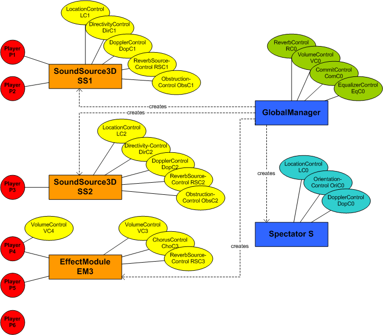
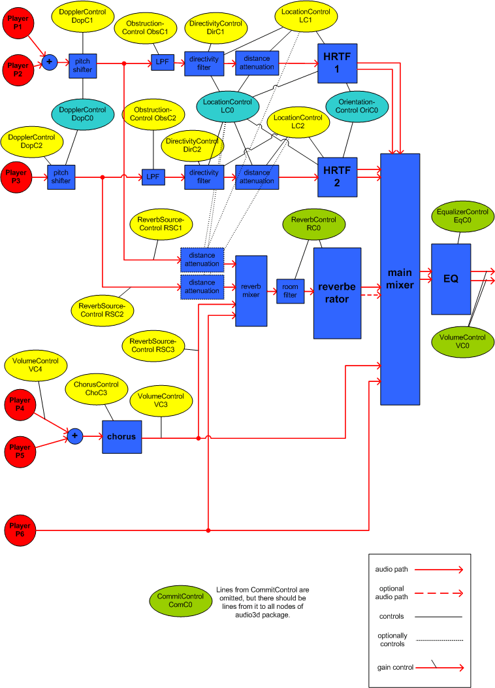

|
|||||||||
| PREV PACKAGE NEXT PACKAGE | FRAMES NO FRAMES | ||||||||
Controls for various 3D audio settings.
See:
Description
| Interface Summary | |
|---|---|
| CommitControl | CommitControl provides a mechanism to enable many audio parameters to be updated
simultaneously. |
| DirectivityControl | DirectivityControl adds to OrientationControl a method for setting the directivity pattern of a sound source. |
| DistanceAttenuationControl | DistanceAttenuationControl is an interface for controlling how
the sound from a sound source is attenuated with its distance from the Spectator. |
| DopplerControl | DopplerControl is an interface for manipulating the settings of an effect called
Doppler. |
| LocationControl | LocationControl is an interface for manipulating
the virtual location of an object (usually a SoundSource3D
or the listener via the Spectator) in the virtual
acoustic space. |
| MacroscopicControl |
MacroscopicControl is an interface for manipulating
the macroscopic behavior of a sound source when using 3D audio. |
| ObstructionControl | ObstructionControl provides a mechanism to control the overall level of an audio
signal flowing directly from a sound source to the Spectator. |
| OrientationControl | OrientationControl is an interface for manipulating
the virtual orientation of an object in the virtual acoustical space. |
This package contains Controls for various 3D audio settings. These Controls can, if they are available, typically be fetched from
SoundSource3Ds or from a Spectator. See table in overview for details.
A good starting point for studying this package is LocationControl.
Here is illustrated one way to implement the audio functionality of JSR-234. In the example, there are two 3D sound sources which are fed by Players P1, P2 and P3. Additionally, there are Players P4, P5 and P6, which are non-3D sources. P4 and P5 share a chorus effect. Additionally, there are an equalizer and a reverb as the global effects. Default distance attanuation is used and therefore, no DistanceAttenuationControls are shown. Also, AudioVirtualizerControls and MacroscopicControls are omitted for simplicity's sake.

Figure 1. The example from Java point of view.

Figure 2. The very same example from signal processing point of view. Please note, that this is just an example and there exists other ways to implement the same functionality.
|
|||||||||
| PREV PACKAGE NEXT PACKAGE | FRAMES NO FRAMES | ||||||||